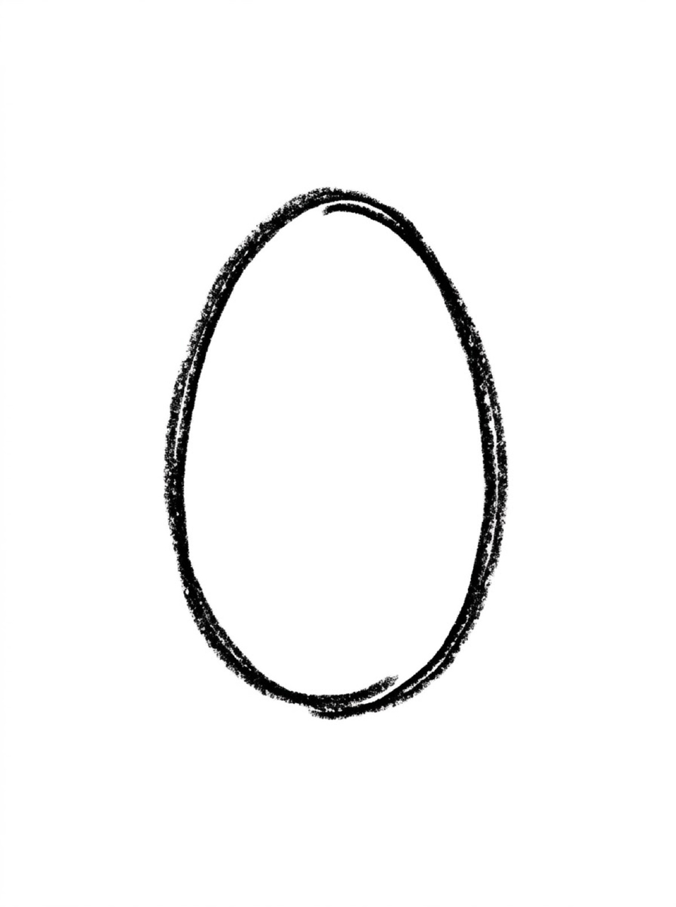
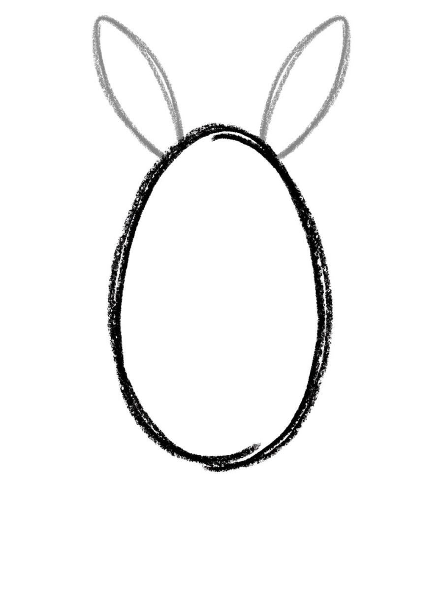
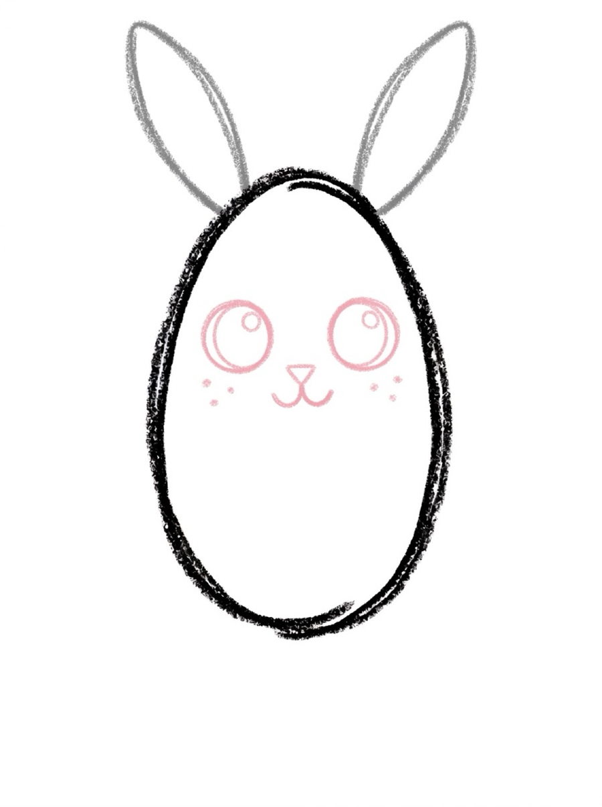
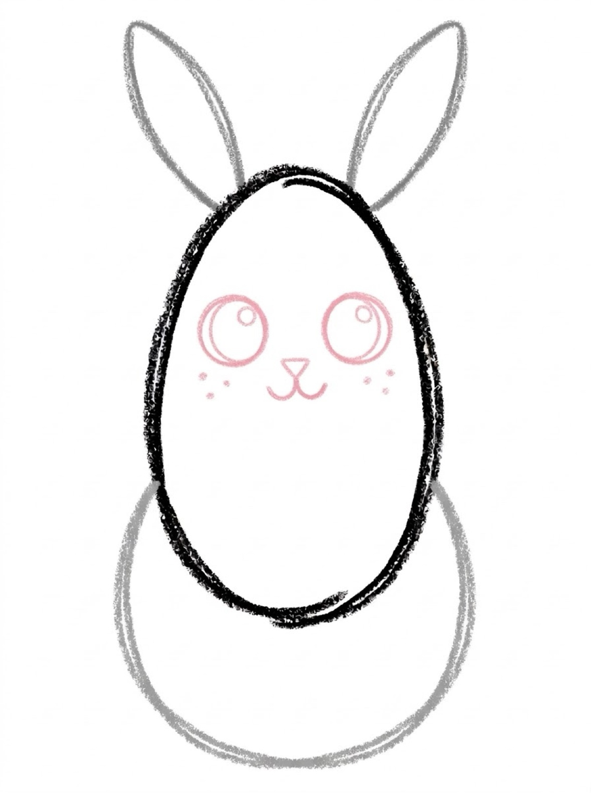
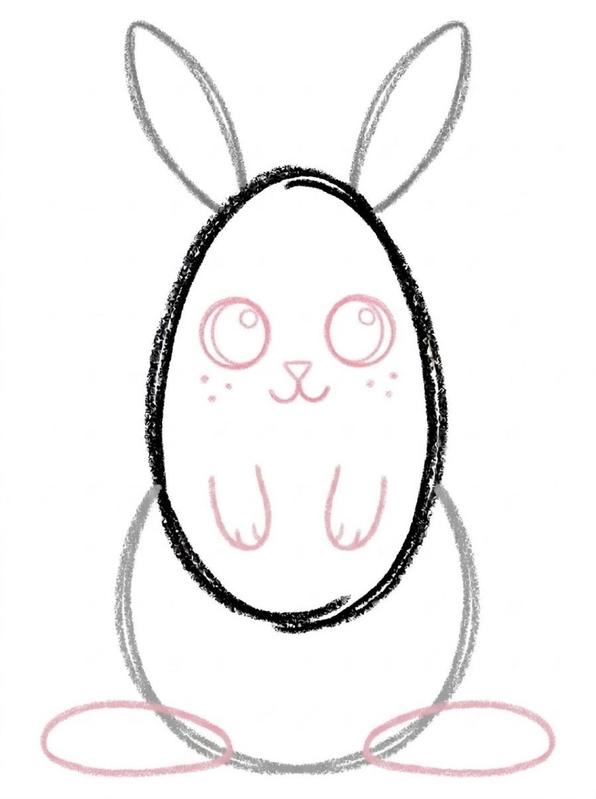

Bunny Drawing for Kids How to Draw a Bunny in 6 Easy Steps
Quick Answer
This free step-by-step tutorial shows kids how to draw a bunny in six easy steps: an oval head, long ears, a cute face, an oval body, big feet, and a fluffy tail. Download the printable PDF, grab crayons, and follow along together. Made for ages 4 and up — no signup needed, just print and draw.
At a Glance
- Subject: How to draw a bunny
- Ages: 3+
- Steps: 6 steps
- Time: ~10 min
- Difficulty: Easy
- Supplies: Paper, crayons
Bunnies are basically two ovals and the world's most recognizable ears. The long ears do so much visual work that everything else can be simple — which is why this is the drawing kids finish fastest and show off most.
✏️ How to Draw a Bunny: Step by Step
One step per box — draw each new part in a different color so kids can see exactly what changed.
Step 1: The Head

Draw an oval standing upright for the bunny's head.
Step 2: Long Ears

Draw two long leaf-shaped ears on top of the head — nice and tall!
Step 3: The Cute Face

Add two big round eyes with tiny white shine dots, a tiny triangle nose, a small w-shaped mouth, and three whisker dots on each cheek.
Step 4: The Body

Draw a bigger oval below the head for the chubby body.
Step 5: Big Feet

Draw two small front paws hanging down from the body, then two long oval feet at the bottom — bunny feet are famously big.
Step 6: Fluffy Tail and Color

Add a fluffy circle tail on the back and inner-ear pink. Color it in!
📊 Bunny Drawing by Age
Every age can join in — just adjust the job.
| Age | What they can do | Tip |
|---|---|---|
| 3–4 | Trace the head oval and long ears | Ears are the fun part — let them make them extra long |
| 4–5 | Draw head, ears, and face with help | The w mouth is just two tiny curves — practice it first |
| 6+ | Draw the whole bunny solo | Challenge: draw the bunny munching a giant carrot |
🖨️ Download Your Free Bunny Drawing Printable
The printable lays out all 6 steps one per box, big enough for little hands — kids draw right alongside each step.
⬇️ Open Free Printable 🖨️ Print🎁 Free printable for ages 3+
🐰 Carrot Patch Story
Draw your bunny next to three triangle carrots with green tops, then add a sun and grass. Suddenly it's not a bunny drawing — it's a story. Ask your kid what the bunny's name is and what happens next. Named characters get drawn again and again.
🐰 Bunnies in the Garden
Whether you call it a bunny or a rabbit, it is the same animal — 'bunny' is just the affectionate nickname, the way 'doggy' is for a dog. Wild rabbits dig burrow neighborhoods called warrens and come out at dawn and dusk to graze, ears swiveling at every sound. A rabbit that is joyful and feeling safe sometimes does a binky: a sudden leap with a twist in mid-air, purely for the fun of it.
Gardeners have mixed feelings about rabbits, because a rabbit reads a vegetable patch as a salad bar. Rabbits eat grass and hay all day long, and their front teeth grow their whole lives to keep up with the chewing. Ask your child what this bunny has its eye on — the answer is usually already growing in the picture.
What You'll Need to Draw a Bunny
Pink for the inner ears and nose, plus gray, white, or brown for the body. White crayons don't show on white paper, so if your kid wants a white bunny, use light gray paper instead — it looks great and the white details pop. A pink crayon with a fine tip helps for the small nose and mouth.
What They're Learning
Bunny ears are essentially long ovals — stretching a familiar shape into a new proportion teaches flexibility with shapes. The fluffy tail (a circle with zigzag edges) shows how texture changes a basic shape. Small features like whiskers also demand a light touch, which is excellent fine motor control practice for ages 4 to 6.
Make It Yours
Give your bunny long eyelashes for a fancy look, or buck teeth for a silly one. Draw it holding a carrot, sitting in grass with flowers, or wearing a bow tie. An Easter version with decorated eggs around it is an obvious seasonal win. Kids can also try a jackrabbit with extra-long ears and big back feet.
🛒 Our Favorite Drawing Supplies
These are the supplies we reach for in our own home — washable (because kids), quality paper, and enough colors to avoid fights.
As an Amazon Associate, MomYouNeedThis earns from qualifying purchases — at no extra cost to you.
📖 Give Your Bunny a Story
Bunnies in stories are small, quick, and underestimated. Is yours the warren's fastest runner, a garden thief with no regrets, or the shy one the others send on the important errand? A dictated sentence or two under the drawing sets the bunny's reputation, and reputations invite sequels — especially at Easter.
The carrot tutorial draws this bunny's favorite thing in the world. One page for the bunny, one for the prize: the pair tells a complete story before a single word is written, and the caption can argue about who gets there first.
🐰 Easter Bunny Drawing
An easter bunny drawing is the classic spring picture: a bunny holding a basket of eggs. Start with the bunny tutorial on this page, then add a basket shape in front and a few egg ovals inside. An easter bunny drawing is really just the bunny plus a basket.
The eggs are the fun part of an easter bunny drawing: color each egg a different bright color, and add stripes or dots. Kids love deciding which egg gets which pattern.
Follow the bunny steps, add the basket and eggs, and you have an easter bunny drawing. It makes a wonderful Easter card.
See free bunny printable for more. More long ears await in how to draw a rabbit and the springtime how to draw an easter bunny.
❓ Bunny Drawing FAQs
What is the easiest way for a kid to draw a bunny?
Draw an upright oval for the head and two long leaf-shaped ears on top. Add big eyes, a tiny nose, and a w mouth, then a bigger oval body, two long feet, and a fluffy circle tail. The ears make it instantly recognizable.
What age can kids start learning to draw a bunny?
Most kids can draw the oval head and long ears around age 4 with help, and the full bunny solo by 5 or 6. The long ears are the easiest 'wow' shape in kid drawing.
What supplies do we need to draw a bunny?
Paper and crayons or markers — plus pink for the inner ears. The free printable PDF lays out all six steps one per box so kids can draw right alongside each step.
Is the bunny drawing printable really free?
Yes — every printable on MomYouNeedThis is 100% free to download and print. No signup, no payment, just tap the download button.
Is a bunny drawing the same as a rabbit drawing?
Yes — bunny is the nickname and rabbit is the animal, so the drawing is the same either way: long ears, round body, fluffy tail. Whichever word your child searches with, this tutorial is the one they want.
How do I print the bunny drawing tutorial?
Open the PDF and print at 100% scale (not 'fit to page') so the drawing boxes stay big enough for little hands. The printable is designed to stay large — never shrunk to force a fit.
What is the easiest way to learn how to draw a bunny easy?
Start with the ears. Two long ovals on an oval head read as 'bunny' before anything else is drawn, which is encouraging for beginners. The tutorial on this page then adds the face, the body, the feet, and the tail in five more short steps.
How does a bunny drawing step by step tutorial work?
Each of the six pictures shows the bunny so far, with the newest part drawn in a fresh color. Your child copies just the colored part, checks it against the picture, and moves on — one small, clear job at a time.
How do you make an easter bunny drawing for kids?
Follow the bunny tutorial, add a basket in front, and fill it with colorful egg ovals. That is an easter bunny drawing.
What makes a cute easter bunny drawing?
Use round shapes, dot eyes, a tiny pink nose, and pastel egg colors. Round shapes and pastels are what make a cute easter bunny drawing.
📚 Keep Exploring
- ✏️ All 76 Drawing Tutorials 76 free step-by-step drawing tutorials for kids.
- 🐾 Animal Coloring Free printable animal coloring pages for little learners.
- ✏️ Drawing Practice Free printable drawing pre-writing worksheet for toddlers.